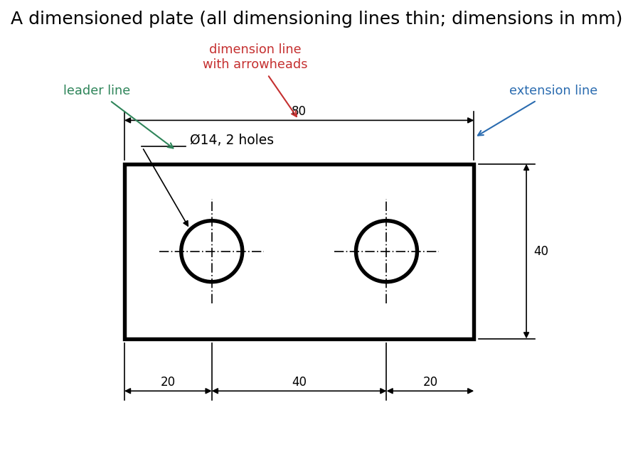

Engineering Drawing · Drawing standards · 3 min read
Dimensioning - Dimension, Extension and Leader Lines
Dimensions are what turn a shape into a specification. Three kinds of thin lines carry them: the dimension line (with arrowheads, showing direction and extent), the extension lines (projecting the feature's edge out to where you can dimension it) and the leader line (pointing to a feature that needs a note). Because they are thin, they cannot be confused with the part's outline.
The three lines
| Line | Definition | Rules |
|---|---|---|
| Dimension line | thin line terminated by arrowheads; shows the direction and extent of a dimension | placed outside the view where possible; the number sits above it |
| Extension line | thin solid line extending from the point on the drawing the dimension refers to | avoid long extension lines; project a little beyond the dimension line |
| Leader line | straight inclined thin solid line, usually ending in an arrowhead | points at a circle, hole or surface and carries a note (e.g. , 2 holes) |

Figure: A plate with two holes. The overall length and height use extension lines (blue) and dimension lines with arrowheads (red); the hole spacing is given as a chain ; the leader line (green) carries the note for the two holes. Centre lines locate the holes.
🎯 Predict first: should the chain and the overall both be given?
One of them is redundant. Giving all four lets the maker add up the chain and get something other than if rounding or errors creep in. Good practice: dimension the chain and the overall length, but mark one as a reference dimension, or omit the one that can be derived. Every feature defined once.
Good practice (a checklist)
- Outside the view, between views, not inside the part.
- Shortest dimension nearest the part, longest outermost, so lines do not cross.
- Do not use a visible edge or centre line as a dimension line.
- Give true size, independent of the scale (Drawing Scales).
- Lettering at mm height for dimensions (Lettering and Types of Lines); read from the bottom or the right of the sheet.
- Avoid duplicate and redundant dimensions.
Worked example
🔬 Dimension a plate with one centred hole
Overall: (horizontal) and (vertical), each with extension lines and a dimension line outside the plate. Hole: a centre cross (chain thin lines) at the plate centre; a leader line to the circle with the note . Because the hole is centred, it needs no location dimensions: say "centred" or give and from two edges. Check: every feature (outline, hole size, hole position) is defined exactly once.
⚠️ A dimension line that touches the part
Leave a small gap between the part and the start of an extension line, and let the extension line run slightly past the arrowhead; otherwise the thin line merges with the outline.
💥 Dimensioning to hidden lines
Dimensions belong on visible features where possible. A dimension to a dashed line is hard to read and often ambiguous; choose a view where that feature is visible.
Self-check
Connections
- Previous: Lettering and Types of Lines · Next: Projection Symbol and First-Angle Projection
- Course map: Engineering Drawing - MOC
Metadata
- Status: draft · Type: concept · Difficulty: beginner
- Course map: Engineering Drawing - MOC